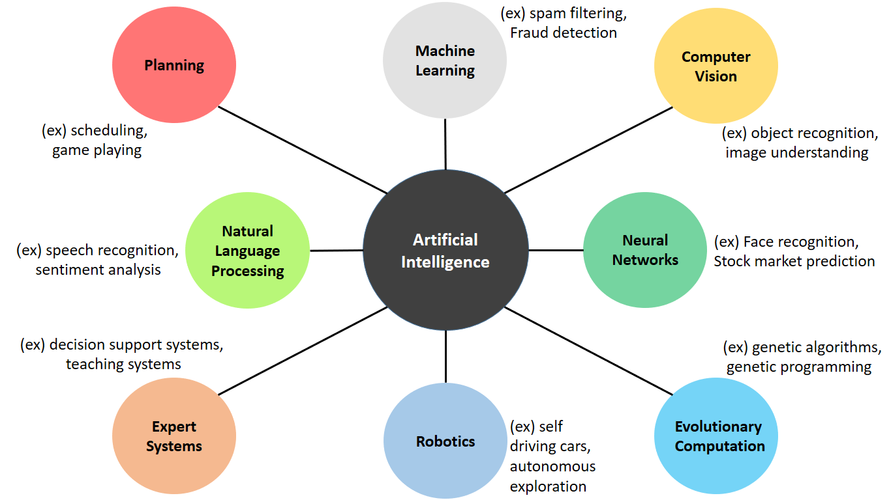
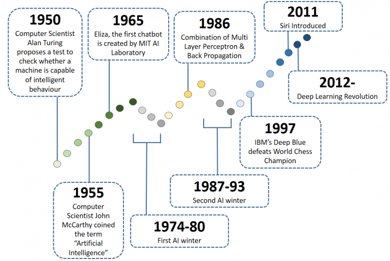

HOME BLOG EBOOKS ABOUT CONTACT SHOP
Intelligence can be defined in many ways; the capacity for logic, understanding, self-awareness, learning, reasoning, planning, creativity, critical thinking, problem solving and so on. More generally, Intelligence can be defined as the ability to perceive or infer information, and to retain it as knowledge to be applied in the future in a similar circumstance or environment. For this reason, we call ourselves an intelligent species. Just like us, plants, animals, insects and all living things also have intelligence, but to a varying degree. This is natural intelligence.
So what is Artificial Intelligence? Artificial intelligence is a branch of science which deals with creation of intelligent machines that work and react like humans (that's the dream). Is it really possible for a machine to have human like intelligence? Short answer, No.
Artificial Intelligence(AI) can be classified into two: Narrow AI (ANI) & General AI (AGI). ANI refers to AI which is capable of handling specialized tasks, for example spam filters, face recognition systems etc. On the other hand, AGI refers to AI which is capable of handling a wide range of tasks, much like humans. AGI is what most people picturize in their head when they think of AI, you know terminator like super intelligent robots. Beginners seem to think AI is about trying to create AGI, but unfortunately this couldn't be further from the truth. We are nowhere close to creating such super machines, at least in the near future. So don't worry about a bunch of robots attacking your home in the middle of the night.
99% of AI is ANI. We have made some significant progress in ANI over the last decade. AI systems capable of doing specific tasks with almost human like precision have been developed for various applications. So if you want to pursue a career in AI, this is probably what you will be doing, that's where the money and the jobs are, at least at the moment.
Actually this division isn't very clear. But if the machine is capable of performing some task from the knowledge it gained from some different task, you can call that AGI. The fact that we haven't made much progress in creating AGI despite all the technological advancements shows how powerful the human brain really is (Use it well :D ).
AI has many sub fields and some of the popular ones are:

The boundaries between these sub-fields are not well defined.
For this blog series, we are focusing on the most popular of these sub-fields, Machine Learning. We will also be touching on Neural Networks.
Although you might have started hearing a lot about AI in the last 5 years or so, it has been around for a long time. The term "Artificial Intelligence" was coined by computer scientist John McCarthy in 1955. Since then AI has been somewhat of a hot topic among the computer tech enthusiasts. But the interesting thing is that, AI has had a period of low expectations (we call it the winter period) after a period of huge hype. The main reason for this is, whenever a significant development happens in the field of AI, we tend to go overboard with its possibilities and when it falls short of our ridiculous expectations, the hype tends to die down until another significant development occurs. As quoted by Arthur C. Clarke, “We over estimate technology in the short term and under estimate it in the long term.” This has happened twice in the history of AI and in all probability the current hype for AI will also come down after a while.

The reason for the current hype in AI can be attributed to 2 main reasons: Data & Processing power. Data is the lifeblood of AI, an AI system cannot function without data. Due to the internet revolution & this huge boom of smart devices, there's more data available than ever before in history. Second reason is Processing power, our devices have become very powerful over the year. Even budget laptops these days are more powerful than high end systems available 10 years back. That's how much our systems have evolved. There are others reasons as well, which we will discuss as we go along.
To improve their business of course. Suppose, in a shoe company, instead of workers identifying and sorting out defective shoes, wouldn’t it be easier if an image recognition AI system is trained to identify defects and shoes are automatically sorted out as it moves on the conveyor. Similarly, wouldn't big corporations benefit from predicting the stock market trend and investing accordingly? The possibilities are endless.